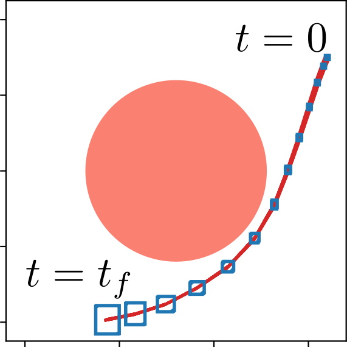
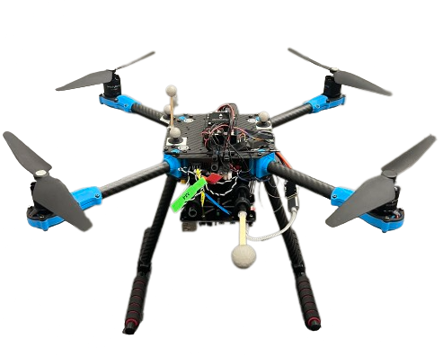
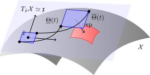

Efficient Reachable Sets on Lie Groups Using Lie Algebra Monotonicity and Tangent Intervals
CDC 2024
School of Electrical and Computer Engineering, Georgia Institute of Technology
December 16, 2024
Motivation: Why Reachability Analysis?
The modern control system is becoming increasingly complex: nonlinearities, learning-based components, hybrid jumps
Problem: Overapproximating Reachable Sets
For the nonlinear system \[ \dot{x} = f(x,u),\quad x(0) = x_0, \] overapproximate the reachable set given a set of initial conditions \(x_0\in\mathcal{X}_0\) and inputs \(u(t)\in\mathcal{U}\).
- Many computational tools: Applied Verification for Continuous and Hybrid Systems (ARCH) workshop, competition, benchmarks
- Address difficulties in highly nonlinear component functions, neural network controllers, hybrid systems, etc.
- Existing method focus on vector state spaces
Safety of the overapproximating reachable set \(\implies\) Safety for any real trajectory of the system
- Offline control synthesis
- Post-synthesis verification
- Online runtime assurance

Motivation: Why Lie Groups?
- Attempting to apply our interval reachability toolbox [1] on matrix state spaces failed.
Example (Quadrotor Control)
Angular velocity integrates to rotation matrix as follows, \[ \dot{R} = R\hat{\omega} \] Propogating a full set of matrices like \([\underline{R},\overline{R}]\subseteq\mathbb{R}^{3\times 3}\) is exceedingly overconservative: \(9\) degrees of uncertainty to capture sets on the \(3\)-dim submanifold \(SO(3)\).

A naive implementation of reachability approaches for e.g. matrix Lie groups fails to capture underlying manifold structure.
- We needed a framework for reachability on Lie groups which respects the underlying manifold structure.
An Approach for Efficient Reachable Sets on Lie Groups
Question
How can we approach the reachability problem when the underlying space is a nonlinear manifold?
This Presentation (Lie Groups)
Borrow strategies from geometric integration theory:
- Build locally equivalent system in Lie algebra
- Apply existing reachability techniques
- Exponentiate back to the original manifold
- Transition between tangent spaces to avoid injectivity issues
- Amenable to any existing reachablity tool!


Background: Interval Reachability and Lie Groups
Interval Analysis
Definition (Order, Intervals)
Element-wise Order: \(x,y\in\mathbb{R}^n\), \[ x \leq y \iff \ \forall i,\, x_i \leq y_i \] Interval: \(\mathbb{IR}^n \ni [\underline{x},\overline{x}] = \{x : \underline{x}\leq x \leq \overline{x}\}\subset \mathbb{R}^n\)
Definition (Inclusion Function [2])
Given \(f:\mathbb{R}^n\to\mathbb{R}^m\), \(\mathsf{F}=[\underline{\mathsf{F}},\overline{\mathsf{F}}]:\mathbb{IR}^n\to\mathbb{IR}^m\) is an inclusion function if for every \(x\in[\underline{x},\overline{x}]\in\mathbb{IR}^n\), \[ f(x) \in [\underline{\mathsf{F}}(\underline{x},\overline{x}),\overline{\mathsf{F}}(\underline{x},\overline{x})]. \]
- Automatable through composition: \(\mathsf{F}= \mathsf{F}_1 \circ \cdots \circ \mathsf{F}_N\) is an inclusion function for \(f = f_1\circ\cdots \circ f_N\)
Embedding System and Interval Reachability
Original System
\[ \dot{x} = f(x,u), \quad x(0) = x_0 \] \(x\in\mathbb{R}^n\), \(u\in\mathbb{R}^m\).
\[ \Big\Downarrow \text{ inclusion function } \mathsf{F}(\underline{x},\overline{x},\underline{u},\overline{u}) \text{ of } f(x,u) \]
Embedding System
\[ \begin{aligned} \underline{x}_i &= \underline{\mathsf{F}}_i(\underline{x},\overline{x}_{i:\underline{x}},\underline{u},\overline{u}) = \underline{\mathsf{E}}_i(\underline{x},\overline{x},\underline{u},\overline{u}) \\ \overline{x}_i &= \overline{\mathsf{F}}_i(\underline{x}_{i:\overline{x}},\overline{x},\underline{u},\overline{u}) = \overline{\mathsf{E}}_i(\underline{x},\overline{x},\underline{u},\overline{u}) \\ \end{aligned} \] \(\left[\begin{smallmatrix} \underline{x} \\ \overline{x} \end{smallmatrix}\right]\in\mathbb{R}^{2n}\), \(\left[\begin{smallmatrix} \underline{u} \\ \overline{u} \end{smallmatrix}\right]\in\mathbb{R}^{2m}\).
Proposition (Interval Reachability) [3]
For any \(x_0\in[\underline{x}_0,\overline{x}_0]\in\mathbb{IR}^n\), \(u(t)\in[\underline{u}(t),\overline{u}(t)]\), \[ x(t) \in [\underline{x}(t), \overline{x}(t)], \] where \(t\mapsto x(t)\) is trajectory of original system, \(t\mapsto\left[\begin{smallmatrix} \underline{x}(t) \\ \overline{x}(t) \end{smallmatrix}\right]\) is trajectory of embedding system.
Embedding System Visualization
Embedding System
\[ \begin{aligned} \underline{x}_i &= \underline{\mathsf{F}}_i(\underline{x},\overline{x}_{i:\underline{x}},\underline{u},\overline{u}) = \underline{\mathsf{E}}_i(\underline{x},\overline{x},\underline{u},\overline{u}) \\ \overline{x}_i &= \overline{\mathsf{F}}_i(\underline{x}_{i:\overline{x}},\overline{x},\underline{u},\overline{u}) = \overline{\mathsf{E}}_i(\underline{x},\overline{x},\underline{u},\overline{u}) \\ \end{aligned} \] \(\left[\begin{smallmatrix} \underline{x} \\ \overline{x} \end{smallmatrix}\right]\in\mathbb{R}^{2n}\), \(\left[\begin{smallmatrix} \underline{u} \\ \overline{u} \end{smallmatrix}\right]\in\mathbb{R}^{2m}\).
Proposition (Interval Reachability) [3]
\(\forall x_0\in[\underline{x}_0,\overline{x}_0]\in\mathbb{IR}^n\), \(u(t)\in[\underline{u}(t),\overline{u}(t)]\) \[ x(t) \in [\underline{x}(t), \overline{x}(t)]. \]
Lie Group
Definition (Lie Group)
A Lie group is a manifold \(G\) with compatible group structure, i.e., the group operation and group inverse are smooth. \[ \begin{aligned} * : G\times G &\to G \\ g_1 * g_2 &\mapsto g_1g_2 \end{aligned} \quad \quad \begin{aligned} \cdot^{-1} : G &\to G \\ g &\mapsto g^{-1} \end{aligned} \]
For example, matrix groups (subgroups of \(GL(n)\)) are Lie groups. We will restrict to matrix Lie groups for simplicity.
Example (\(\mathbb{S}\simeq SO(2)\))
The circle \(\mathbb{S}= \{e^{i\theta} : \theta\in\mathbb{R}\}\) with the operation \[ e^{i\theta_1} e^{i\theta_2} = e^{i(\theta_1 + \theta_2)} \] and inverse \((e^{i\theta})^{-1} = e^{-i\theta}\).
Example (\(SO(3)\))
The group of \(3\)D rotations, \[ \{R\in\mathbb{R}^{3\times 3} : R^TR = I,\ \det(R) = +1\}, \] with matrix multiplication as group operation and \(R^{-1} = R^T\).
Lie Algebra: Left-Invariant Vector Fields
Definition (Left-Translation Map)
For \(g\in G\), \(\ell_g:G\to G\) is multiplication on the left, \[ \ell_g(h) = gh. \] Then the differential map \((d\ell_g)_h : T_gG\to T_{gh}G\) canonically bijects vectors between tangent spaces.
Definition (Left-Invariant Vector Field, Lie Algebra)
Let \(\mathfrak{g}= T_eG\) be the tangent space to \(e\) (Lie algebra). \[ \Theta\in T_eG \iff \Theta^L(g) = (d\ell_g)_e(\Theta) % \text{ left-invariant} \]
- The flow \(\gamma:\mathbb{R}\to G\) of a left-invariant vector field \(\Theta^L\) is a one-parameter subgroup, \(\gamma(t)\gamma(s) = \gamma(t + s)\).
Lie Exponential Map: A Canonical Set of Coordinates
Definition (Exponential map)
Let \(\Theta\in\mathfrak{g}\) and let \(\gamma:\mathbb{R}\to G\) be the flow of the left-invariant vector field \(\Theta^L\) passing through \(\gamma(0) = e\). Define \(\exp : \mathfrak{g}\to G\), \[ \exp(\Theta) = \gamma(1). \]
Basic Properties
- \(\exp(\Theta)\exp(\Omega) \neq \exp(\Theta + \Omega)\)
- Restricts to a bijection on neighborhood \(N_{\exp}\) of \(0\in\mathfrak{g}\), i.e., a canonical local parameterization
- For matrix Lie group, usual matrix exponential: \[ \exp(\Theta) = \sum_{k=0}^\infty \frac{\Theta^k}{k!} \]
Efficient Reachable Sets on Lie Groups
Control Systems on Lie Groups
Definition (Control System)
A Lie group control system is of the following form, \[ \dot{x} = (d\ell_x)_e(A(x,u)) = xA(x,u), \quad x(0) = x_0, \] where \(x\in \mathcal{X}\) is a Lie group, \(u\in\mathcal{U}\) is a vector space, \(A:\mathcal{X}\times\mathcal{U}\to\mathfrak{x}\) is a mapping to the Lie algebra \(\mathfrak{x}\) of \(\mathcal{X}\).
- General nonlinear system with input \(u\)
- General parameterized vector field: \(f(x,u)\in T_x\mathcal{X}\), vectors identified by Lie algebra + left translation
Example (Single Integrator on \(SO(3)\))
With \(\mathcal{X}= SO(3)\), \(\mathcal{U}= \mathbb{R}^3\), \[ \dot{R} = R\hat{u}, \quad R(0) = R_0, \] \(\hat{\cdot}:\mathbb{R}^3\to\mathfrak{so}(3)\) is the “hat map” identification of skew-symmetric matrices.
Locally Equivalent Control System on the Lie Algebra
Original Lie Group System
\[ \dot{x} = xA(x,u), \quad x(0) = x_0 \] \(x\in\mathcal{X}\) (Lie group), \(u\in\mathcal{U}\) (vector space)
\[ \Big\Downarrow \]
Locally Equivalent Lie Algebra System
\[ \begin{gathered} \dot{\Theta} = \operatorname{dexp}^{-1}_{\Theta} (A(x, u)), \quad \Theta(0) = \Theta_0, \\ x = \underbrace{x_0 \exp(\Theta_0)^{-1}}_{\mathring{x}} \exp(\Theta) \end{gathered} \] \(\Theta\in\mathfrak{x}\) (Lie algebra), \(u\in\mathcal{U}\) (vector space)
Proposition: For small \(t\), recovers the original trajectory.
Differential of \(\exp\)
Left-trivialized differential of \(\exp\): \(\operatorname{dexp}:\mathfrak{x}\times\mathfrak{x}\to\mathfrak{x}\) \[ \frac{d}{dt}\bigg|_{t=0} \exp(\Theta + t\Omega) = \exp(\Theta)\operatorname{dexp}_\Theta(\Omega) % = (d\ell_{\exp(\Theta)})_e(\dexp_\Theta(\Omega)) \]
- \(\operatorname{dexp}_{\Theta}^{-1}\) has an analytic expression as an infinite summation of commutators
Analysis is centered around \({\mathring{x}}= x_0\exp(\Theta_0^{-1})\), identifying the tangent space \(T_{{\mathring{x}}}\mathcal{X}\simeq\mathfrak{x}\)
Crucial Fact: \(\Theta\) evolves on the vector space \(\mathfrak{x}\)
A Strategy for Numerical Integration [4]
Tangent Interval
- Choose basis of Lie algebra: \(\hat{\cdot}:\mathbb{R}^n\to\mathfrak{x}\), so \(\mathfrak{x}\simeq\mathbb{R}^n\).
- Intervals in \(\mathbb{IR}^n\) identify interval subsets of \(\mathfrak{x}\).
- Intervals in \(\mathbb{I}\mathfrak{x}\) identify interval subsets of \(T_x\mathcal{X}\).
Definition (Tangent inteval and Exponentiated Tangent interval)
Let \([\underline{\Theta},\overline{\Theta}] \in \mathbb{I}\mathfrak{x}\) be an interval in the Lie algebra.
- \((d\ell_x)_e([\underline{\Theta},\overline{\Theta}])\) is a tangent interval in \(T_x\mathcal{X}\).
- \(x\exp([\underline{\Theta},\overline{\Theta}])\) is an exponentiated tangent interval.
Lie Algebra Embedding System: Interval Reachability in the Tangent Space
Lie Algebra System
\[ \begin{gathered} \dot{\Theta} = \underbrace{\operatorname{dexp}^{-1}_{\Theta} (A({\mathring{x}}\exp(\Theta), u))}_{f(\Theta,u)}, % \quad \Theta(0) = \Theta_0, \\ \end{gathered} \] \(\Theta\in\mathfrak{x}\) (Lie algebra), \(u\in\mathcal{U}\) (vector space)
\[ \Big\Downarrow \text{ inclusion function } \mathsf{F}(\underline{\Theta},\overline{\Theta},\underline{u},\overline{u}) \text{ of } f(\Theta,u) \]
Embedding Lie Algebra System
\[ \begin{aligned} \underline{\Theta}_i &= \underline{\mathsf{F}}_i(\underline{\Theta},\overline{\Theta}_{i:\underline{\Theta}},\underline{u},\overline{u}) = \underline{\mathsf{E}}_i(\underline{\Theta},\overline{\Theta},\underline{u},\overline{u}) \\ \overline{\Theta}_i &= \overline{\mathsf{F}}_i(\underline{\Theta}_{i:\overline{\Theta}},\overline{\Theta},\underline{u},\overline{u}) = \overline{\mathsf{E}}_i(\underline{\Theta},\overline{\Theta},\underline{u},\overline{u}) \\ \end{aligned} \] \(\left[\begin{smallmatrix} \underline{\Theta} \\ \overline{\Theta} \end{smallmatrix}\right]\in\mathbb{R}^{2n}\), \(\left[\begin{smallmatrix} \underline{u} \\ \overline{u} \end{smallmatrix}\right]\in\mathbb{R}^{2m}\).
Theorem (Tangent Interval Reachability)
For any \(x_0\in{\mathring{x}}\exp([\underline{\Theta}_0,\overline{\Theta}_0])\), \(u(t)\in[\underline{u}(t),\overline{u}(t)]\), for small \(t>0\), \[ x(t) \in {\mathring{x}}\exp([\underline{\Theta}(t), \overline{\Theta}(t)]), \] where \(t\mapsto x(t)\) is trajectory of original Lie group system, \(t\mapsto\left[\begin{smallmatrix} \underline{\Theta}(t) \\ \overline{\Theta}(t) \end{smallmatrix}\right]\) is trajectory of embedding system.
A Strategy for Numerical Integration Reachability
The BCH Formula: Transitioning Between Tangent Spaces
\[ \exp(\Theta_1) \exp(\Theta_2) = \exp(\Theta_3) \] is solved by an infinite sum of commutators (\([\![ \Theta_1,\Theta_2 ]\!] = \Theta_1\Theta_2 - \Theta_2\Theta_1\)), \[ \begin{align*} \Theta_3 &= \operatorname{bch}_{\Theta_1}(\Theta_2) = \Theta_1 + \Theta_2 + \frac12[\![ \Theta_1,\Theta_2 ]\!] + \cdots % &+ \frac1{12} \dbrak{\Theta_1,\dbrak{\Theta_1,\Theta_2}} - \frac1{12} \dbrak{\Theta_2,\dbrak{\Theta_1,\Theta_2}} + \cdots \end{align*} \]
Shift base point to move \([\underline{\Theta},\overline{\Theta}]\) back towards origin. Take midpoint \(\mathring{\Theta} = \frac{\underline{\Theta }+ \overline{\Theta}}{2}\)
New centering: \({\mathring{x}}' = {\mathring{x}}\exp(\mathring{\Theta})\)
New Lie algebra interval: Need \({\mathring{x}}'\exp([\underline{\Theta}',\overline{\Theta}']) \supseteq {\mathring{x}}\exp([\underline{\Theta},\overline{\Theta}])\)
Proposition (Recentering via BCH)
If \(\textsf{BCH}_\Theta\) is an inclusion function for \(\operatorname{bch}_\Theta\), \[ {\mathring{x}}\exp([\underline{\Theta},\overline{\Theta}]) \subseteq {\mathring{x}}\exp(\mathring{\Theta}) \exp(\textsf{BCH}_{-\mathring{\Theta}}([\underline{\Theta},\overline{\Theta}])) \]

A Strategy for Numerical Integration Reachability
Abelian State Spaces
Proposition (Abelian State Spaces)
Let \(G\) be an Abelian Lie group.
- \(\operatorname{dexp}_\Theta\) and \(\operatorname{dexp}^{-1}_\Theta\) are the identity map;
- The map \(\textsf{BCH}_{\Theta_1}([\underline{\Theta}_2,\overline{\Theta}_2]) = [\Theta_1 + \underline{\Theta}_2, \Theta_1 + \overline{\Theta}_2]\) is an inclusion function for \(\operatorname{bch}_{\Theta}\).
Examples
- The circle \(\mathbb{S}\)
- The line \(\mathbb{R}\)
- Finite products \(\mathbb{S}\times \cdots\times \mathbb{S}\times \mathbb{R}\times \cdots \times \mathbb{R}= \mathbb{T}^{n_1} \times \mathbb{R}^{n_2}\)
Examples
Coupled Oscillators \[ \begin{align*} \dot{x}_1 &= x_1\left(\hat{\omega}_1 + \log(x_2x_1^{-1})\right) \\ \dot{x}_2 &= x_2\left(\hat{\omega}_2 + \log(x_1x_2^{-1})\right) \end{align*} \]
Single Integrator on \(SO(3)\) \[ \begin{align*} \dot{R} = R\hat{u} \end{align*} \]
Conclusion
- The reachable set computation problem has not really been considered on non-vector state spaces
- An intrinsic manner to handle reachable sets on Lie groups: apply existing reachability frameworks for a locally equivalent system in the tangent space, using the exponential map to describe real reachable sets on Lie group
- Since tangent space only provides local information, use overapproximations of the BCH formula to transition intervals between tangent spaces
For all the details, please see the paper
Thank you for your attention!
References
Backup Slides
Analytic expressions
\[ \begin{align*} \operatorname{ad}_\Theta(\Omega) &= [\![\Theta,\Omega]\!] \\ \operatorname{dexp}_{\Theta} &= \frac{1 - \exp(-\operatorname{ad}_\Theta)}{\operatorname{ad}_\Theta} = \sum_{k=0}^\infty \frac{(-1)^k}{(k+1)!}(\operatorname{ad}_\Theta)^k \\ \operatorname{dexp}^{-1}_{\Theta} &= \frac{\operatorname{ad}_\Theta}{1 - \exp(-\operatorname{ad}_\Theta)} = \sum_{k=0}^\infty \frac{B_k}{k!} (\operatorname{ad}_\Theta)^k \end{align*} \]
Cones and Intervals
- Cone \(K\): Convex subset of vector space \(V\) such that \(K + K \subseteq K\), \(\lambda K \subseteq K\)
- Induces a partial ordering \(x \leq_K y\iff y - x\in K\).
- Interval \([\underline{x},\overline{x}] := \{x\in V : \underline{x}\leq_K x \leq_K\overline{x}\}\in \mathbb{I}_KV\)
- Given map between ordered spaces \(f:(V,\leq_K)\to (W,\leq_C)\), \(\mathsf{F}= [\underline{\mathsf{F}},\overline{\mathsf{F}}]_C : \mathbb{I}_KV \to \mathbb{I}_CW\) is an inclusion function if for any \(x\in [\underline{x},\overline{x}]_K\in\mathbb{I}_KV\), \[ f(x) \in \mathsf{F}([\underline{x},\overline{x}]_K) = [\underline{\mathsf{F}}([\underline{x},\overline{x}]_K), \overline{\mathsf{F}}([\underline{x},\overline{x}]_K)]_C. \]
Cone Fields, Tangent Intervals
Definition (Cone field)
A cone field \(\mathcal{K}\) on manifold \(M\) is a mapping such that \(\mathcal{K}(p)\subseteq T_pM\) is a cone for every \(p\in M\).
Definition (Tangent interval)
Given a cone field \(\mathcal{K}\) on manifold \(M\), a tangent interval is an interval in the tangent space at a point \(p\), i.e., \[ [\underline{v}_p,\overline{v}_p]_{\mathcal{K}(p)}. \] A base point plus an interval in the tangent space. Through a map like the Lie exponential map (or Riemannian exponential map), these can represent real sets on the manifold.